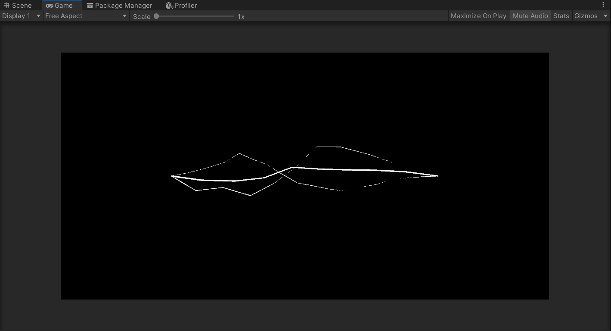

本文使用 Unity >= 2020.3.19 的 URP 模板完成点击此处下载
制作这一闪电效果的参考来源于 这一视频 。通过将弧、波以及随机噪声组合在一起可以构建出单条闪电，进而叠加出完整的闪电效果。
在本文中，我们将使用 Unity 中的 LineRenderer 渲染闪电，为此你需要准备一些东西：
一个发光材质
一个空的 GameObject
一个新 C# 脚本
我们希望这个闪电是可控的，所以给它加上了一系列参数：
animate ：闪电是否会动（主要用于调参）seed ：随机种子startPos, endPos ：闪电的起止位置startWidth, endWidth ：闪电的起止宽度numKeyPoints ：组成闪电的线段个数evolutionStart, evolutionEnd ：起止剪切的比例offsetPercentage ：径向错位的比例tangentRandomRadius ：切向错位的半径tangentRandomScale ：切向错位的全局缩放曲线widthRandomSize ：粗细偏移量animationDuration ：一轮动画的长度arcHeight ：弧的最高位置sineHeight, sineOffset ：波的高度和上下偏移量noiseEvolutionSpeed ：噪声演化速度
这些参数的作用将在接下来说明。
得到这些参数后，我们还需要进行一些预处理。下面这个函数简单计算了步长、方向、距离以及 z 轴对应闪电法向的局部坐标系的基：
1 2 3 4 5 6 7 8 9 10 11 12 13 14 15 16 17 18 19 20 21 22 23 24 25 private void initParams() { // random state rdm = seed; // direction and distance Vector3 dir = endPos - startPos; dist = dir.magnitude; pos_step = dist / (numKeyPoints + 1); width_step = (endWidth - startWidth) / (numKeyPoints + 1); // local coords n = dir.normalized; Vector3 tmp = new Vector3(0.0f, 0.0f, 0.0f); if (dir.z == 1.0f) { tmp.x = 1.0f; } else { tmp.z = dir.z > 0.0f ? 1.0f : -1.0f; } x = Vector3.Cross(tmp, n); y = Vector3.Cross(n, x); }
当关闭动画时，我们需要在每次调用都保证生成同样的随机数。这里使用了一个状态变量解决这个问题。仅当打开动画时，会使用一个新的随机数更新这个状态变量，让下一轮随机数的结果不同。
1 2 3 4 5 6 7 8 9 if (animate) { Random.InitState(rdm + Time.frameCount); rdm = (int)((1 << 32) * Random.value); } else { Random.InitState(rdm); }
随机数会在使用前首先生成好，并存放在数组中以供后面使用。为了生成平滑的动画，这些参数均使用 Perlin Noise 生成。
1 2 3 4 5 6 7 8 9 10 11 12 13 // generate random numbers Vector2[] tangentOffsets = new Vector2[numKeyPoints]; float[] directionalOffsets = new float[numKeyPoints]; float[] widthOffsets = new float[numKeyPoints]; for (int i = 0; i < numKeyPoints; i++) { float r = Mathf.Clamp01(Mathf.PerlinNoise(i * 4 + 0.1f, currTime * noiseEvolutionSpeed + seed)) * 0.75f + 0.25f; float phi = Mathf.Clamp01(Mathf.PerlinNoise(i * 4 + 0.9f, currTime * noiseEvolutionSpeed + seed)) * 2.0f * Mathf.PI; tangentOffsets[i].x = r * Mathf.Sin(phi); tangentOffsets[i].y = r * Mathf.Cos(phi); directionalOffsets[i] = Mathf.Clamp01(Mathf.PerlinNoise(i * 4 + 2.2f, currTime * noiseEvolutionSpeed + seed)) - 0.5f; widthOffsets[i] = Mathf.Clamp01(Mathf.PerlinNoise(i * 4 + 2.9f, currTime * noiseEvolutionSpeed + seed)) - 0.5f; }
这个效果中包含了完全随机的扰动和不那么随机的，有明确的更新频率的动画部分。这里使用了一个 currAnimationIdx 记录了之前正在播放的动画的轮数。当一轮动画结束后，这个值将被更新、并生成下一轮动画所需的参数。
另一方面，我们还需要记录当前动画播放到的时间位置 animationTime ，它被缩放在了 0 - 1 的范围内方便使用。
1 2 3 4 5 6 7 8 9 10 11 12 13 14 15 16 17 18 19 20 21 22 23 24 25 26 27 28 29 30 31 // timing float currTime = Time.fixedTime; float animationIdx = Mathf.Floor(currTime / animationDuration); float animationTime = currTime / animationDuration - animationIdx; // new animation params if (currAnimationIdx != animationIdx) { currAnimationIdx = animationIdx; // arc currArcMaxHeight = Random.value * arcHeight; currArcTangentDeg = Random.value * 2.0f * Mathf.PI; currArcTangentDir = new Vector2(Mathf.Sin(currArcTangentDeg), Mathf.Cos(currArcTangentDeg)); // sine currSineLT = Random.value * 0.5f - 0.25f; if (currSineLT >= 0) { currSineLT = Mathf.Max(0.1f, currSineLT); } currSineRT = Random.value * 0.5f + 0.75f; if (currSineRT <= 1) { currSineRT = Mathf.Min(0.9f, currSineRT); } currSineHeight = Random.value * sineHeight; currSinePhi = Random.value * 2.0f * Mathf.PI; currSineOffset = (Random.value * 2.0f - 1.0f) * sineOffset + // offset 2.0f * Mathf.Cos(currSinePhi) / Mathf.PI * currSineHeight; // normalize currSineRotation = Random.value * 2.0f * Mathf.PI; } float arcAmp = currArcMaxHeight * animationTime;
整条闪电由 numKeyPoints + 2 个关键点构成，其中的首尾两个位置的点位置不变。而对于中间的关键点，需要通过之前的动画参数和随机数值确定真正的位置
基础位置可以简单地通过 startPos + n * pos_step * (i + 1) 得到。在均匀的基础位置的基础上，如果加入了径向位置偏移，则还需要加上偏移量
视频中第一个效果是一个反复出现的弧形，这里我们使用一个简单的二次函数来拟合它：
H ( x ) = k ( x − 0.5 ) 2 + C max ∗ t H(x) = k(x - 0.5)^2 + C_{\max}*t
H ( x ) = k ( x − 0 . 5 ) 2 + C max ∗ t
其中的 x , t x, t x , t [ 0 , 1 ] [0, 1] [ 0 , 1 ] C C C k k k H ( 0 ) = H ( 1 ) = 0 H(0) = H(1) = 0 H ( 0 ) = H ( 1 ) = 0 k k k currArcTangentDeg 即可得到最终的偏移量。偏移的过程如下：
1 2 3 float arcAmpAtT = arcAmp * (1.0f - 4.0f * (t - 0.5f) * (t - 0.5f)); pos += currArcTangentDir.x * x * arcAmpAtT * tangentRandomScale.Evaluate(t); pos += currArcTangentDir.y * y * arcAmpAtT * tangentRandomScale.Evaluate(t);
其中 currArcTangentDir 保存了该角度对应在单位圆上的位置，便于直接与局部坐标系相乘
第二个效果是一个并不完整的波，这里我们使用一个切割过的三角函数拟合它：
H ( x ) = { ( x / x 0 ) S ( x 0 ) , x ∈ [ 0 , max ( 0 , x 0 ) ) S ( x ) , x ∈ [ x 0 , x 1 ) ( 1 − x ) / ( 1 − x 1 ) S ( x 1 ) , x ∈ [ min ( x 1 , 1 ) , 1 ] , S ( x ) = sin ( π x / ( x 1 − x 0 ) + ϕ + t ) + o f f s e t H(x) = \begin{cases}
(x / x_0) S(x_0) & , x \in [0, \max(0, x_0))\\
S(x) & , x \in [x_0, x_1)\\
(1 - x) / (1 - x_1) S(x_1) & , x \in [\min(x_1, 1), 1]\\
\end{cases} ,
S(x) = \sin(\pi x / (x_1 - x_0) + \phi + t) + offset H ( x ) = ⎩ ⎪ ⎨ ⎪ ⎧ ( x / x 0 ) S ( x 0 ) S ( x ) ( 1 − x ) / ( 1 − x 1 ) S ( x 1 ) , x ∈ [ 0 , max ( 0 , x 0 ) ) , x ∈ [ x 0 , x 1 ) , x ∈ [ min ( x 1 , 1 ) , 1 ] , S ( x ) = sin ( π x / ( x 1 − x 0 ) + ϕ + t ) + o f f s e t
这个波的偏移方向应该和之前的弧相同。上式中的 x 0 , x 1 x_0, x_1 x 0 , x 1 o f f s e t offset o f f s e t
1 2 3 4 5 6 7 8 9 10 11 12 13 14 15 16 17 float sineAmpAtT = 0; float phi = currSinePhi + animationTime; float sineRotationDeg = (t - 0.5f) * currSineRotation + currArcTangentDeg; if (t < currSineLT) { sineAmpAtT = t / currSineLT * (Mathf.Sin(phi) * currSineHeight + currSineOffset); } if (t >= currSineLT && t <= currSineRT) { sineAmpAtT = Mathf.Sin(phi + (t - currSineLT) / (currSineRT - currSineLT) * Mathf.PI) * currSineHeight + currSineOffset; } if (t > currSineRT) { sineAmpAtT = (1.0f - t) / (1.0f - currSineRT) * (-Mathf.Sin(phi) * currSineHeight + currSineOffset); } pos += sineAmpAtT * Mathf.Sin(sineRotationDeg) * x * tangentRandomScale.Evaluate(t); pos += sineAmpAtT * Mathf.Cos(sineRotationDeg) * y * tangentRandomScale.Evaluate(t);
随机扰动包括了位置上的随机性和宽度上的随机性，均通过简单加上随机数的方式解决。
1 2 3 4 5 6 7 8 // position pos += tangentOffsets[i].x * x * tangentRandomRadius * tangentRandomScale.Evaluate(t); pos += tangentOffsets[i].y * y * tangentRandomRadius * tangentRandomScale.Evaluate(t); full_positions[i + 1] = pos; // width float width = startWidth + width_step * (i + 1); width += widthOffsets[i] * t * widthRandomSize; full_curve.AddKey(t, width);
注意到上面所有有关切向偏移的代码中均乘以了一个 tangentRandomScale.Evaluate(t) ，这个参数可以提供更加有意义的闪电形状（比如两侧靠近定点而中间偏移摆动大）。另一个控制项是起止的位置，可以用于做出闪电生长的动画。最后，你可以控制噪声演进的速度和一轮动画的时长来制造更多差异性的效果。
将脚本拖动到空对象上、增加一个 LineRenderer 、把材质扔上去，你就获得了一根闪电。通过将不同参数的闪电叠加在一起，你就可以获得一个看起来还不错的闪电效果。